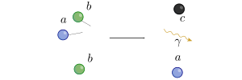

An introduction to thermonuclear reaction networks
Thanassis Psaltis (@psaltistha)
Triangle Universities Nuclear Laboratory & North Carolina State University
May 16, 2023
2nd Frontiers Summer School
Topics we will cover
Thermonuclear reaction rates
The rate equations
Solving the network
Sensitivity studies using reaction networks
The periodic table from
a Galactic Chemical Evolution perspective
Thermonuclear reaction rates
C. Travaglio et al. Astrophys. J 601, 864 (2004)
Our playground
3 species and 3 nuclear processes
$$ a + b \longleftrightarrow c + \gamma $$ $$ b \rightarrow a $$ Reaction rate
Number of reactions per unit volume and time
\[ r_{ab} = n_a n_b \langle \sigma v \rangle_{ab} \]Number density, abundance and mass fraction
\[ n_i = \frac{\rho N_a X_i}{A_i} = \rho N_A Y_i \]Thermonuclear reaction rate
\[ N_A \langle \sigma v \rangle_{ab} = \left( \frac{8}{\pi \mu}\right)^{1/2} (kT)^{-3/2} N_A \int_0^\infty \sigma(E)~E~e^{-E/kT} dE \]The rate equations
C. Travaglio et al. Astrophys. J 601, 864 (2004)
Solving the network
C. Travaglio et al. Astrophys. J 601, 864 (2004)
Sensitivity studies using reaction networks
C. Travaglio et al. Astrophys. J 601, 864 (2004)
How do we identify
important reactions?
Nuclear reaction networks


are an essential tool for nuclear astrophysics
C. Jiang et al., New J. Phys. 23 083035 (2021)
Sensitivity studies motivate experiments

Same model, but different nuclear input!
$\mathrm{^7Be(\alpha,\gamma)^{11}C}$ BGO plot


Calculate a thermonuclear reaction rate

Treat $(\omega \gamma, E_{r_i},\cdots)$ as distributions and use Monte Carlo techniques to extract a statistically meaningful reaction rate.
The code is available at $\texttt{https://github.com/rlongland/RatesMC}$
Take-home message
Nuclear reaction networks are an indispensable tool for a nuclear astrophysicist. Learn how it works and use it to your advantage!
Questions

Notes and slides available at
http://psaltisa.github.io/teaching/reaction-networks